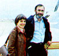

Paul Ehrlich (Bing Professor of Population Studies and Professor of Biological Sciences, Stanford University) and Anne Ehrlich (Senior Research Associate, Department of Biological Sciences, Stanford) are familiar names to ecologists and environmentalists everywhere. As well they should be. Because it was Paul and Anne who ? through their writing and research ? gave special meaning to the words ""population"", ""resources"", and ""environment"" in the late 1960's. (They also coined the tern coevolution, and did a lot to make ecology the household word it is today.) But while most folks are aware of the Ehrlichs' popular writing in the areas of ecology and overpopulation (most of us ? for instance ? have read Paul's book The Population Bomb) . . . far too few people, have any idea of how deeply the Ehrlichs are involved in ecological research (research of the type that tends to be published only in technical journals and college textbooks). That's why it pleases us to be able to present ? on a regular basis ? the following semi-technical column by authors/ecologists/educators Anne and Paul Ehrlich.